4 First class lists
A data type is first class in a programming language if data of that type can be
the value of a variable
an input to a procedure
the value returned by a procedure
a member of a data aggregate
anonymous (not named)
In Scratch , numbers and text strings are first class. You can put a number in a variable, use one as the input to a block, call a reporter that reports a number, or put a number into a list.
But Scratch’s lists are not first class. You create one using the “Make a list ” button, which requires that you give the list a name. You can’t put the list into a variable, into an input slot of a block, or into a list item—you can’t have lists of lists. None of the Scratch reporters reports a list value. (You can use a reduction of the list into a text string as input to other blocks, but this loses the list structure; the input is just a text string, not a data aggregate.)
A fundamental design principle in Snap! is that all data should be first class. If it’s in the language, then we should be able to use it fully and freely. We believe that this principle avoids the need for many special-case tools, which can instead be written by Snap! users themselves.
Note that it’s a data type that’s first class, not an individual value. Don’t think, for example, that some lists are first class, while others aren’t. In Snap!, lists are first class, period.

The list Block
At the heart of providing first class lists is the ability to make an “anonymous” list —to make a list without simultaneously giving it a name. The list reporter block does that.
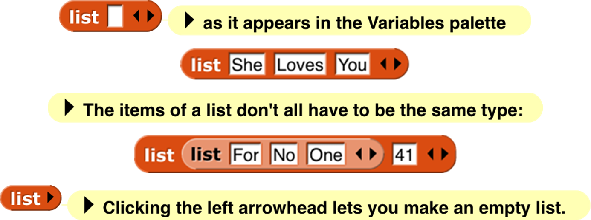
At the right end of the block are two left-and-right arrowheads . Clicking on these changes the number of inputs to list, i.e., the number of elements in the list you are building. Shift-clicking changes by three at a time.
You can use this block as input to many other blocks:

Snap! does not have a “Make a list” button like the one in Scratch . If you want a global “named list,” make a global variable and use the set block to put a list into the variable.
Lists of Lists
Lists can be inserted as elements in larger lists. We can easily create ad hoc structures as needed:
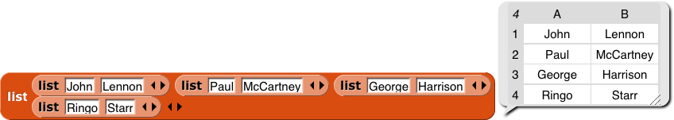
Notice that this list is presented in a different format from the “She Loves You” list above. A two-dimensional list is called a table and is by default shown in table view. We’ll have more to say about this later.
We can also build any classic computer science data structure out of lists of lists , by defining constructors (blocks to make an instance of the structure), selectors (blocks to pull out a piece of the structure), and mutators (blocks to change the contents of the structure) as needed. Here we create binary tree s with selectors that check for input of the correct data type; only one selector is shown but the ones for left and right children are analogous.
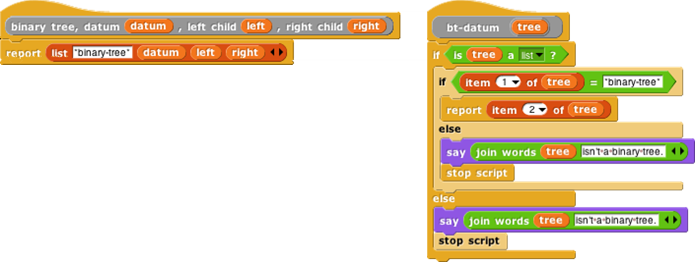
Functional and Imperative List Programming
There are two ways to create a list inside a program. Scratch users will be familiar with the imperative programming style , which is based on a set of command blocks that modify a list:

As an example, here are two blocks that take a list of numbers as input, and report a new list containing only the even numbers from the original list:[4]
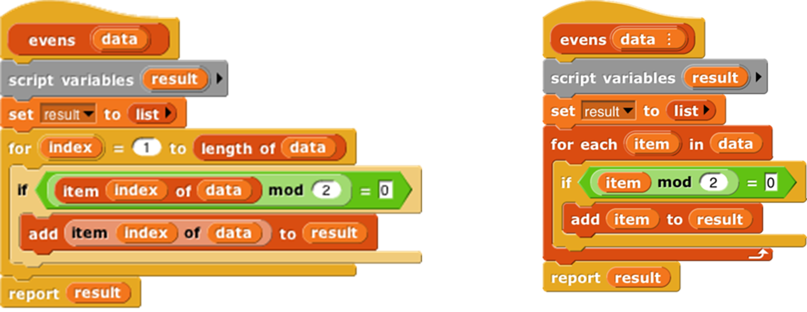
In this script, we first create a temporary variable, then put an empty list in it, then go through the items of the input list using the add … to (result) block to modify the result list, adding one item at a time, and finally report the result.
Functional programming is a different approach that is becoming important in “real world” programming because of parallelism , i.e., the fact that different processors can be manipulating the same data at the same time. This makes the use of mutation (changing the value associated with a variable, or the items of a list) problematic because with parallelism it’s impossible to know the exact sequence of events, so the result of mutation may not be what the programmer expected. Even without parallelism, though, functional programming is sometimes a simpler and more effective technique, especially when dealing with recursively defined data structures. It uses reporter blocks, not command blocks, to build up a list value:

In a functional program, we often use recursion to construct a list, one item at a time. The in front of block makes a list that has one item added to the front of an existing list, without changing the value of the original list. A nonempty list is processed by dividing it into its first item (item 1 of ) and all the rest of the items (all but first of ), which are handled through a recursive call:

Snap! uses two different internal representations of lists, one (dynamic array ) for imperative programming and the other (linked list ) for functional programming. Each representation makes the corresponding built-in list blocks (commands or reporters, respectively) most efficient. It’s possible to mix styles in the same program, but if the same list is used both ways, the program will run more slowly because it converts from one representation to the other repeatedly. (The item ( ) of [ ] block doesn’t change the representation.) You don’t have to know the details of the internal representations, but it’s worthwhile to use each list in a consistent way.
Higher Order List Operations and Rings
There’s an even easier way to select the even numbers from a list:

The keep block takes a Predicate expression as its first input, and a list as its second input. It reports a list containing those elements of the input list for which the predicate returns true. Notice two things about the predicate input: First, it has a grey ring around it. Second, the mod block has an empty input. Keep puts each item of its input list, one at a time, into that empty input before evaluating the predicate. (The empty input is supposed to remind you of the “box” notation for variables in elementary school: ☐+3=7.) The grey ring is part of the keep block as it appears in the palette:

What the ring means is that this input is a block (a predicate block, in this case, because the interior of the ring is a hexagon), rather than the value reported by that block. Here’s the difference:
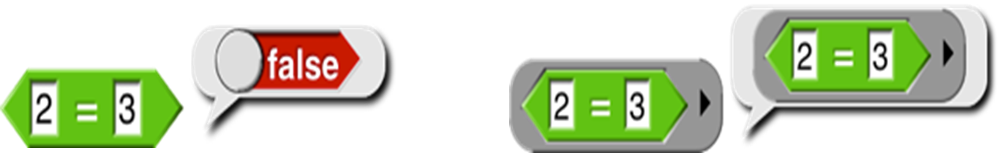
Evaluating the = block without a ring reports true or false; evaluating the block with a ring reports the block itself. This allows keep to evaluate the = predicate repeatedly, once for each list item. A block that takes another block as input is called a higher order block (or higher order procedure, or higher order function ).
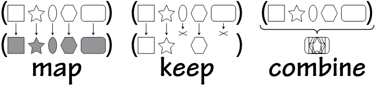
Snap! provides four higher order function blocks for operating on lists:
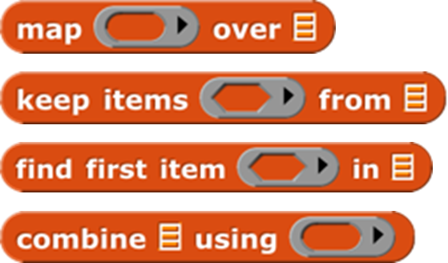
You’ve already seen keep. Find first is similar, but it reports just the first item that satisfies the predicate, not a list of all the matching items. It’s equivalent to  but faster because it stops looking as soon as it finds a match. If there are no matching items, it returns an empty string.
but faster because it stops looking as soon as it finds a match. If there are no matching items, it returns an empty string.
Map takes a Reporter block and a list as inputs. It reports a new list in which each item is the value reported by the Reporter block as applied to one item from the input list. That’s a mouthful, but an example will make its meaning clear:

By the way, we’ve been using arithmetic examples, but the list items can be of any type, and any reporter can be used. We’ll make the plurals of some words:
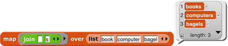
These examples use small lists, to fit the page, but the higher order blocks work for any size list.
An empty gray ring represents the identity function, which just reports its input. Leaving the ring in map empty is the most concise way to make a shallow copy of a list (that is, in the case of a list of lists, the result is a new toplevel list whose items are the same (uncopied) lists that are items of the toplevel input list) . To make a deep copy of a list (that is, one in which all the sublists, sublists of sublists, etc. are copied), use the list as input to the  block (one of the variants of the sqrt of block). This works because id of is a hyperblock (page 55).
block (one of the variants of the sqrt of block). This works because id of is a hyperblock (page 55).
The third higher order block, combine , computes a single result from all the items of a list, using a two-input reporter as its second input. In practice, there are only a few blocks you’ll ever use with combine:
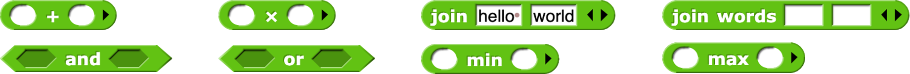
These blocks take the sum of the list items, take their product, string them into one word, combine them into a sentence (with spaces between items), see if all items of a list of Booleans are true, see if any of the items is true, find the smallest, or find the largest.


Why + but not −? It only makes sense to combine list items using an associative function : one that doesn’t care in what order the items are combined (left to right or right to left). (2+3)+4 = 2+(3+4), but (2−3)−4 ≠ 2−(3−4).
The functions map, keep, and find first have an advanced mode with rarely-used features: If their function input is given explicit input names (by clicking the arrowhead at the right end of the gray ring; see page 69), then it will be called for each list item with three inputs: the item’s value (as usual), the item’s position in the input list (its index), and the entire input list. No more than three input names can be used in this contex

Table View vs. List View
We mentioned earlier that there are two ways of representing lists visually. For one-dimensional lists (lists whose items are not themselves lists) the visual differences are small:
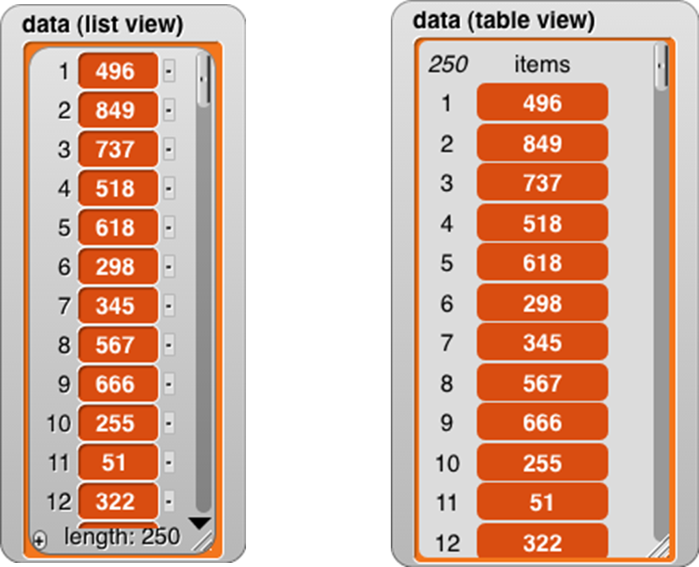
For one-dimensional lists, it’s not really the appearance that’s important. What matters is that the list view allows very versatile direct manipulation of the list through the picture: you can edit the individual items, you can delete items by clicking the tiny buttons next to each item, and you can add new items at the end by clicking the tiny plus sign in the lower left corner. (You can just barely see that the item deletion buttons have minus signs in them.) Even if you have several watchers for the same list, all of them will be updated when you change anything. On the other hand, this versatility comes at an efficiency cost; a list view watcher for a long list would be way too slow. As a partial workaround, the list view can only contain 100 items at a time; the downward-pointing arrowhead opens a menu in which you can choose which 100 to display.
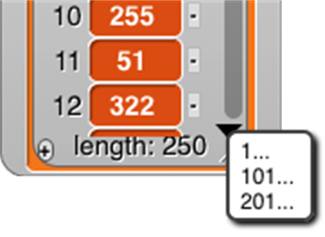
By contrast, because it doesn’t allow direct editing, the table view watcher can hold hundreds of thousands of items and still scroll through them efficiently. The table view has flatter graphics for the items to remind you that they’re not clickable to edit the values.
Right-clicking on a list watcher (in either form) gives you the option to switch to the other form. The right-click menu also offers an open in dialog… option that opens an offstage table view watcher, because the watchers can take up a lot of stage space that may make it hard to see what your program is actually doing. Once the offstage dialog box is open, you can close the stage watcher. There’s an OK button on the offstage dialog to close it if you want. Or you can right-click it to make another offstage watcher, which is useful if you want to watch two parts of the list at once by having each watcher scrolled to a different place.
Table view is the default if the list has more than 100 items, or if any of the first ten items of the list are lists, in which case it makes a very different-looking two-dimensional picture:
In this format, the column of red items has been replaced by a spreadsheet-looking display. For short, wide lists, this display makes the content of the list very clear. A vertical display, with much of the space taken up by the “machinery” at the bottom of each sublist, would make it hard to show all the text at once. (The pedagogic cost is that the structure is no longer explicit; we can’t tell just by looking that this is a list of row-lists, rather than a list of column-lists or a primitive two-dimensional array type. But you can choose list view to see the structure.)
Beyond such simple cases, in which every item of the main list is a list of the same length, it’s important to keep in mind that the design of table view has to satisfy two goals, not always in agreement: (1) a visually compelling display of two-dimensional arrays, and (2) highly efficient display generation, so that Snap! can handle very large lists, since “big data” is an important topic of study. To meet the first goal perfectly in the case of “ragged right” arrays in which sublists can have different lengths, Snap! would scan the entire list to find the maximum width before displaying anything, but that would violate the second goal.
Snap! uses the simplest possible compromise between the two goals: It examines only the first ten items of the list to decide on the format. If none of those are lists, or they’re all lists of one item, and the overall length is no more than 100, list view is used. If the any of first ten items is a list, then table view is used, and the number of columns in the table is equal to the largest number of items among the first ten items (sublists) of the main list.
Table views open with standard values for the width and height of a cell, regardless of the actual data. You can change these values by dragging the column letters or row numbers. Each column has its own width, but changing the height of a row changes the height for all rows. (This distinction is based not on the semantics of rows vs. columns, but on the fact that a constant row height makes scrolling through a large list more efficient.) Shift-dragging a column label will change the width of that column.
If you tried out the adjustments in the previous paragraph, you may have noticed that a column letter turns into a number when you hover over it. Labeling rows and columns differently makes cell references such as “cell 4B” unambiguous; you don’t have to have a convention about whether to say the row first or the column first. (“Cell B4” is the same as “cell 4B.”) On the other hand, to extract a value from column B in your program, you have to say item 2 of, not item B of. So it’s useful to be able to find out a column number by hovering over its letter.
Any value that can appear in a program can be displayed in a table cell:

This display shows that the standard cell dimensions may not be enough for large value images. By expanding the entire speech balloon and then the second column and all the rows, we can make the result fit:
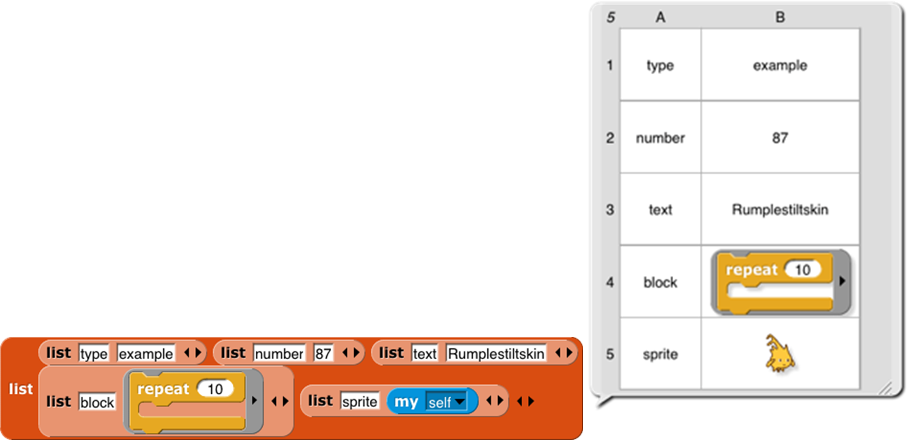
But we make an exception for cases in which the value in a cell is a list (so that the entire table is three-dimensional). Because lists are visually very big, we don’t try to fit the entire value in a cell:

Even if you expand the size of the cells, Snap! will not display sublists of sublists in table view. There are two ways to see these inner sublists: You can switch to list view, or you can double-click on a list icon in the table to open a dialog box showing just that sub-sub-list in table view.
One last detail: If the first item of a list is a list (so table view is used), but a later item isn’t a list, that later item will be displayed on a red background, like an item of a single-column list:

So, in particular, if only the first item is a list, the display will look almost like a one-column display.
Comma-Separated Values
Spreadsheet and database programs generally offer the option to export their data as CSV (comma-separated values) lists. You can import these files into Snap! and turn them into tables (lists of lists), and you can export tables in CSV format. Snap! recognizes a CSV file by the extension .csv in its filename.
A CSV file has one line per table row, with the fields separated by commas within a row:
John,Lennon,rhythm guitar
Paul,McCartney,bass guitar
George,Harrison,lead guitar
Ringo,Starr,drums
Here’s what the corresponding table looks like:
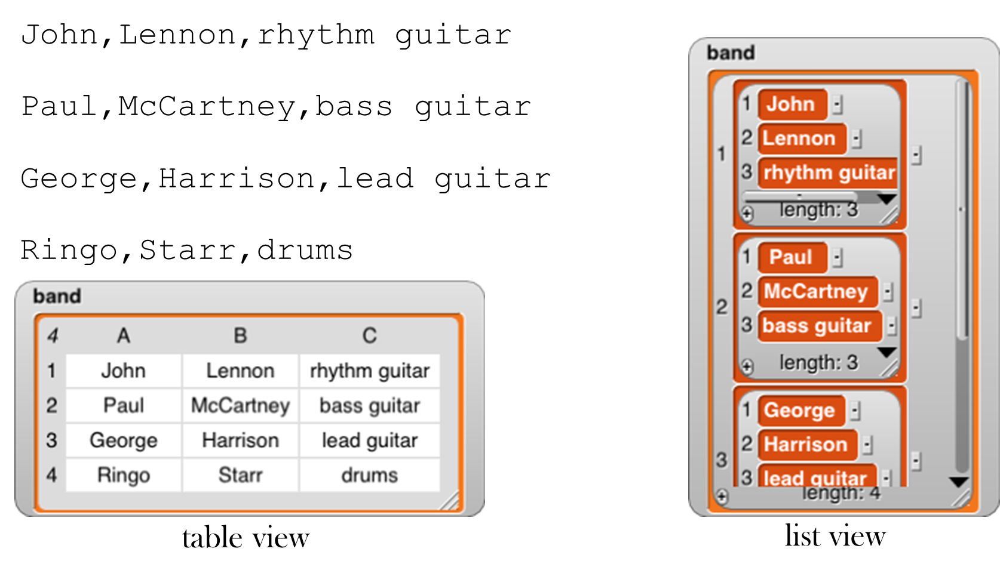
Here’s how to read a spreadsheet into Snap!:
Make a variable with a watcher on stage:

Right-click on the watcher and choose the “import” option. (If the variable’s value is already a list, be sure to click on the outside border of the watcher; there is a different menu if you click on the list itself.) Select the file with your csv data.
There is no 3; that’s it! Snap! will notice that the name of the file you’re importing is something.csv and will turn the text into a list of lists automatically.
Or, even easier, just drag and drop the file from your desktop onto the Snap! window, and Snap! will automatically create a variable named after the file and import the data into it.
If you actually want to import the raw CSV data into a variable, either change the file extension to .txt before loading it, or choose “raw data” instead of “import” in the watcher menu.
If you want to export a list, put a variable watcher containing the list on the stage, right-click its border, and choose “Export.” (Don’t right-click an item instead of the border; that gives a different menu.)
Multi-dimensional lists and JSON
CSV format is easy to read, but works only for one- or two-dimensional lists. If you have a list of lists of lists, Snap! will instead export your list as a JSON (JavaScript Object Notation) file . I modified my list:

and then exported again, getting this file:
[[“John”,“Lennon”,“rhythm guitar”],[[“James”,“Paul”],“McCartney”,“bass guitar”],[“George”,“Harrison”,“lead guitar”],[“Ringo”,“Starr”,“drums”]]
You can also import lists, including tables, from a .json file. (And you can import plain text from a .txt file.) Drag and drop works for these formats also.
Hyperblocks
A scalar is anything other than a list. The name comes from mathematics, where it means a magnitude without direction, as opposed to a vector, which points toward somewhere. A scalar function is one whose domain and range are scalars, so all the arithmetic operations are scalar functions, but so are the text ones such as letter and the Boolean ones such as not.
The major new feature in Snap! 6.0 is that the domain and range of most scalar function blocks is extended to multi-dimensional lists, with the underlying scalar function applied termwise:
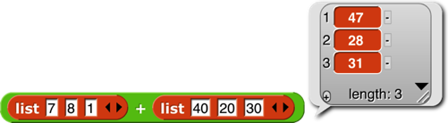 

Mathematicians, note in the last example above that the result is just a termwise application of the underlying function (7×3, 8×5, etc.), not matrix multiplication. See Appendix B for that. For a dyadic (two-input) function, if the lengths don’t agree, the length of the result (in each dimension) is the length of the shorter input:

However, if the number of dimensions differs in the two inputs, then the number of dimensions in the result agrees with the higher-dimensional input; the lower-dimensional one is used repeatedly in the missing dimension(s):

(7×6. 8×10, 1×20, 40×6, 20×10, etc.). In particular, a scalar input is paired with every scalar in the other input:

One important motivation for this feature is how it simplifies and speeds up media computation , as in this shifting of the Alonzo costume to be bluer:

Each pixel of the result has ¾ of its original red and green, and three times its original blue (with its transparency unchanged). By putting some sliders on the stage, you can play with colors dynamically:
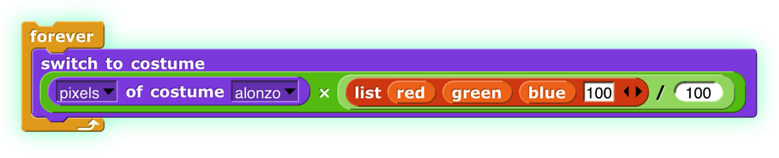 
There are a few naturally scalar functions that have already had specific meanings when applied to lists and therefore are not hyperblocks: = and identical to (because they compare entire structures, not just scalars, always reporting a single Boolean result), and and or (because they don’t evaluate their second input at all if the first input determines the result), join (because it converts non-scalar (and other non-text) inputs to text string form), and is a (type) (because it applies to its input as a whole). Blocks whose inputs are “natively” lists, such as  and
and  , are never hyperblocks.
, are never hyperblocks.
 The reshape block takes a list (of any depth) as its first input, and then takes zero or more sizes along the dimensions of an array. In the example it will report a table (a matrix) of four rows and three columns. If no sizes are given, the result is an empty list. Otherwise, the cells of the specified shape are filled with the atomic values from the input list. If more values are needed than provided, the block starts again at the head of the list, using values more than once. If more values are provided than needed, the extras are ignored; this isn’t an error.
The reshape block takes a list (of any depth) as its first input, and then takes zero or more sizes along the dimensions of an array. In the example it will report a table (a matrix) of four rows and three columns. If no sizes are given, the result is an empty list. Otherwise, the cells of the specified shape are filled with the atomic values from the input list. If more values are needed than provided, the block starts again at the head of the list, using values more than once. If more values are provided than needed, the extras are ignored; this isn’t an error.
 The combinations block takes any number of lists as input; it reports a list in which each item is a list whose length is the number of inputs; item i of a sublist is an item of input i. Every possible combination of items of the inputs is included, so the length of the reported list is the product of the lengths of the inputs.
The combinations block takes any number of lists as input; it reports a list in which each item is a list whose length is the number of inputs; item i of a sublist is an item of input i. Every possible combination of items of the inputs is included, so the length of the reported list is the product of the lengths of the inputs.

 The item of block has a special set of rules, designed to preserve its pre-hyperblock meaning and also provide a useful behavior when given a list as its first (index) input:
The item of block has a special set of rules, designed to preserve its pre-hyperblock meaning and also provide a useful behavior when given a list as its first (index) input:
If the index is a number, then item of reports the indicated top-level item of the list input; that item may be a sublist, in which case the entire sublist is reported (the original meaning of item of):

If the index is a list of numbers (no sublists), then item of reports a list of the indicated top-level items (rows, in a matrix; a straightforward hyperization):

If the index is a list of lists of numbers, then item of reports an array of only those scalars whose position in the list input matches the index input in all dimensions (changed in Snap! 6.6!):

If a list of list of numbers includes an empty sublist, then all items are chosen along that dimension:

To get a column or columns of a spreadsheet, use an empty list in the row selector (changed in Snap! 6.6!):

The length of block is extended to provide various ways of looking at the shape and contents of a list. The options other than length are mainly useful for lists of lists, to any depth. These new options work well with hyperblocks and the APL library. (Examples are on the next page.)

length: reports the number of (toplevel) items in the list, as always.
rank : reports the number of dimensions of the list, i.e., the maximum depth of lists of lists of lists of lists. (That example would be rank 4.)
dimensions : reports a list of numbers, each of which is the maximum length in one dimension, so a spreadsheet of 1000 records, each with 4 fields, would report the list [1000 4].
flatten : reports a flat, one-dimensional list containing the atomic (non-list) items anywhere in the input list.
columns : reports a list in which the rows and columns of the input list are interchanged, so the shape of the transpose of a shape [1000 4] list would be [4 1000]. This option works only for lists whose rank is at most 2. The name reflects the fact that the toplevel items of the reported table are the columns of the original table.
reverse: reports a list in which the (toplevel) items of the input list are in reverse order.
The remaining three options report a (generally multi-line) text string. The input list may not include any atomic (non-list) data other than text or numbers. The lines option is intended for use with rank-one lists of text strings; it reports a string in which each list item becomes a line of text. You can think of it as the opposite of the split by line block . The csv option (comma-separated values) is intended for rank-two lists that represent a spreadsheet or other tabular data. Each item of the input list should be a list of atoms; the block reports a text string in which each item of the big list becomes a line of text in which the items of that sublist are separated by commas. The json option is for lists of any rank; it reports a text string in which the list structure is explicitly represented using square brackets. These are the opposites of split by csv and split by json.

The idea of extending the domain and range of scalar functions to include arrays comes from the language APL . (All the great programming languages are based on mathematical ideas. Our primary ancestors are Smalltalk , based on models, and Lisp , based on lambda calculus. Prolog , a great language not (so far) influencing Snap!, is based on logic. And APL, now joining our family, is based on linear algebra, which studies vectors and matrices. Those other programming languages are based on the weaknesses of computer hardware.) Hyperblocks are not the whole story about APL, which also has mixed-domain functions and higher order functions. Some of what’s missing is provided in the APL library. (See Appendix B.)